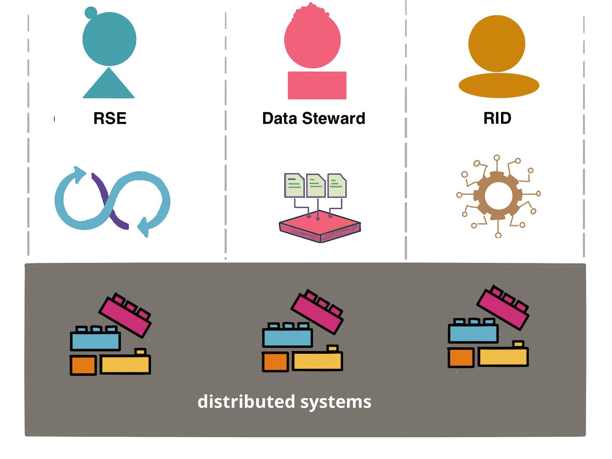

Expert Generalists
ARC Collaboration Hour
2025-12-16
Introduction
What is an Expert Generalist?
Someone who combines broad knowledge across multiple domains with deep expertise in several areas
- Not a shallow generalist, not a narrow specialist
- Key abilities:
- Learn quickly
- Recognize fundamental patterns beneath shifting tools
- Apply insights across disciplines
Beyond T-Shaped

Six Key Characteristics
1. Curiosity
- Always learning
- Driven to explore new technologies and domains
- Seeking understanding rather than quick solutions
- When encountering answers, they dig deeper to ensure comprehension
2. Collaborativeness
- Recognizing personal knowledge limits, actively partner with specialists
- Ask informed questions and approach unfamiliar domains with humility
- Understanding there are usually valid reasons behind established practices
3. User Focus
- Channels curiosity productively
- Rather than chasing every trend, prioritise learning that helps users excel
- Direct attention to technologies serving project goals
4. Favour Fundamental Knowledge
- Prioritise principles and patterns over tool-specific expertise
- Patterns remain relevant across technology shifts
- Frameworks become obsolete; fundamentals endure
5. Blend of Specialist and Generalist Skills
- Develop deep knowledge in several domains
- Typically acquired through:
- Necessary project work
- Intellectual curiosity
6. Sympathy for Related Domains
“Mechanical sympathy” — intuitive understanding of adjacent fields
Examples:
- Database designers understanding UX constraints
- Frontend engineers grasping infrastructure limitations
Why Organisations Need Expert Generalists
Finding exactly the right kind of specialist limits the candidate pool
Expert Generalists are particularly valuable at working across the specialist skill boundaries, handling interactions and filling in gaps
→ they can be the glue in a team
Cultivating Expert Generalists
How to Recognise an Expert Generalist
- How do they approach a particularly challenging situation?
- Do they venture into unfamiliar domains, and how do they get up to speed?
- How do they collaborate with people inside and outside their own organisation or discipline?

Cultivating Expert Generalists
Avoid vertical silos:
❌ UI Engineer → Senior UI Engineer → UI Architect
The implicit message:
“Wander outside your lane and your progress stalls.”
Cultivating Expert Generalists
Organizations should encourage cross-disciplinary experimentation
Examples:
Business analyst writing code out of curiosity
→ A PRISM writing code out of curiosity
A front-end engineer dabbling in DevOps
→ An RSE doing some RID work
A data engineer trying product analysis
→ A data steward doing some data science work
From Tools to Fundamentals
- The Problem: Industry focuses on tool expertise rather than underlying principles
- The Solution: Emphasize patterns and principles
Example: Application Development, Data Engineering, and DevOps all share distributed systems foundations
→ It’s all just Partitioning, replication and consistency
From Tools to Fundamentals

But What About the Specialists
- Expert Generalists enhance but don’t replace specialists
- Expert Generalists don’t know what they don’t know
- Recommendation: have at least one specialist for any core technology
- Teams of only generalists succeed slower than blended teams
- Teams of only specialists easily miss things outside their specialty
How is Any of This Relevant to ARC?
Emerging Silos
- Profession groups
- Subgroups within Collaboration team
- Push for specialisation (?)
Expert Generalists can be the bridges
Not So Different
Expert Generalists in the LLM Era
LLMs will further increase Expert Generalist importance
Lower barriers to exploring unfamiliar tools
Expert Generalists with strong fundamentals:
- Ask better questions
- Critically evaluate AI suggestions against architectural patterns
- Avoid blindly accepting unreliable outputs
Use LLMs to generate questions, explain mechanisms, and provide tools
Conclusion
Key Takeaways
Expert Generalists represent sophisticated expertise combining:
- Learning velocity
- Systems thinking
- Interpersonal skills
Expert Generalist should be treated as a first-class skill
Organizations should deliberately cultivate this capability
Further Reading
📖 Full article: martinfowler.com/articles/expert-generalist.html
Key Quote:
“Developers who roam across languages, architectures, and problem spaces may seem like ‘jack-of-all-trades, master-of-none,’ yet repeated dives below surface differences help them develop durable, principle-level mastery.”
Expert Generalists | https://milanmlft.github.io/talks/